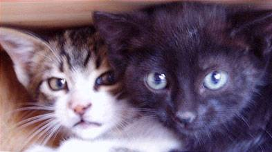

I volem celebrar-ho amb vosaltres: Voluntaris, socis, col·laboradors, simpatitzants i companys d'altres protectores que ho heu fet possible i, alhora, aprofitar per informar-vos del que hem fet fins ara, de coses que pensem que us poden interessar: Adopcions, origen dels ajuts econòmics, en què gastem els diners que ens doneu, sobre altres ajuts que rebem com joguines o roba per a la colònia, etc. El que no ho haguem fet abans -facilitar informació-, de forma periòdica, en contra del que havíem decidit fer des de bon principi, és degut a les urgències constants del dia a dia i a un xic de desorganització. Procurarem fer-ho en endavant, de forma trimestral i, també, quan apareguin circumstàncies extraordinàries que pensem que valgui la pena comunicar-vos. Durant aquests 2 anys hem aconseguit que més de 400 gats de diferents edats i diferents condicions de salut i de sociabilitat, hagin trobat una família que els acull i se'n cuida, els uns, altres un refugi on se'ls proporciona menjar, afecte i atenció veterinària. I això no hagués estat possible sense la vostra ajuda. Us volem explicar -els que teniu contacte regular amb nosaltres ja ho sabeu- que, tot i que és cert que disposem d'un espai de propietat municipal, que vam començar la recollida de gats de les vies amb un conveni i aportació econòmica del districte i que nosaltres vam creure que aquest conveni tindria continuïtat i que el districte assumiria, al menys una part, de les despeses que genera el manteniment de la colònia, ens hem trobat que l'any 2008 y fins ara el 2009, la única aportació pública ha estat el pagament d'una factura veterinària per part de Medi Ambient. Fins i tot, se'ns va arribar a dir, verbalment, que "si els gats els hem recollit nosaltres, són nostres" Nosaltres, més aviat pensem que ni els gats ni cap altre ésser viu tenen amo, que no són objectes, que, en tot cas, són ciutadans de Barcelona. I, és en aquest punt, que no podem fer altre cosa que lamentar la manca de sensibilitat i de respecte de l'Administració en vers els animals de quatre potes i els animalistes. Som nosaltres, les diferents associacions animalistes i altres persones independents, les que fem possible amb el nostre treball de cada dia i amb els nostres recursos salvar la vida de una petita quantitat dels animals de carrer de la nostra ciutat. El balanç ha estat positiu, perquè HEM PRES CONTACTE AMB GRAN QUANTITAT DE PERSONES HONESTES i hem pogut ajudar a molts animals. Però ha estat molt dur: Les peticions d'ajuda per animals abandonats han estat constants i els nostres recursos mínims, però.... encara hi som ! Volem agrair el recolzament i les aportacions econòmiques i en espècie de les demés associacions de la "Plataforma Gatera" i, també, i de forma molt especial, als companys de l'associació alemanya "Tierhilfe-Verbindet" que ha aconseguit adoptants per gats adults, sense "pedigrí" o amb defectes físics pels quals aquí era molt difícil de trobar-ne. Sense oblidar, és clar, les seves valuoses aportacions de diners i materials en general. Adjuntem el quadre-resum (en pdf) de l'activitat de l'any 2008 (gats recollits, donats en adopció, etc) que sumats als 136 que hi havia a la gatera, més una trentena en acolliment provisional a finals del 2007 fan prop de 200 gats a finals de l'any 2008. També és important la xifra de 120 gats donats en adopció, que han trobat companys de dues potes disposats a oferir-els-hi -i a rebre d'ells- afecte i amistat. | |||
|  |